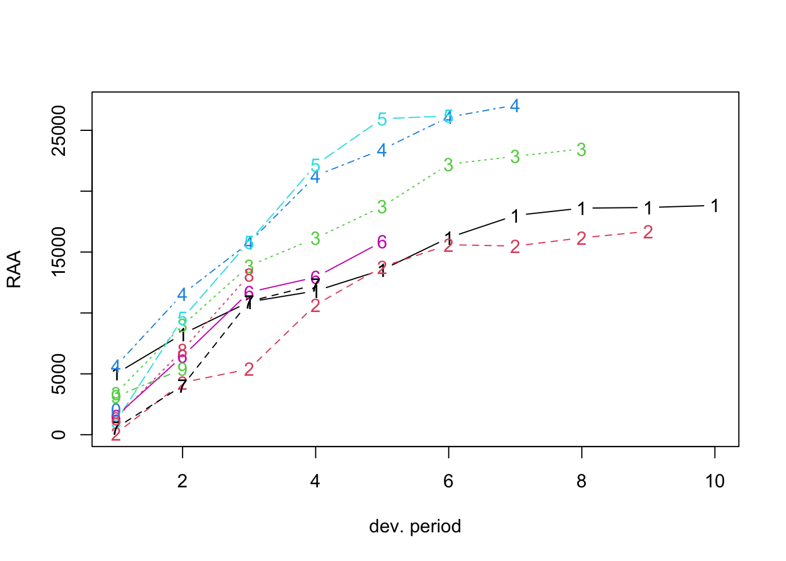
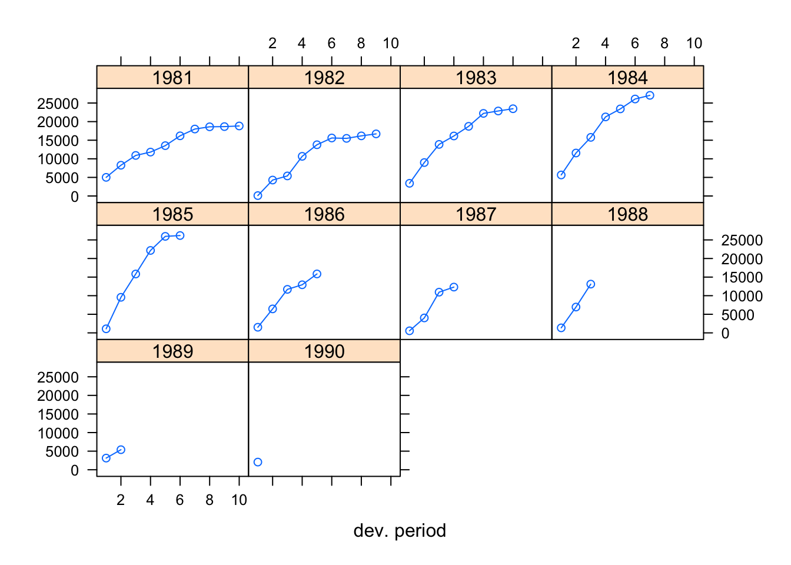

5 Claims reserving and IBNR
library(ChainLadder)##
## Welcome to ChainLadder version 0.2.17
## To cite package 'ChainLadder' in publications use:
##
## Gesmann M, Murphy D, Zhang Y, Carrato A, Wuthrich M, Concina F, Dal
## Moro E (2023). _ChainLadder: Statistical Methods and Models for
## Claims Reserving in General Insurance_. R package version 0.2.17,
## <https://CRAN.R-project.org/package=ChainLadder>.
##
## To suppress this message use:
## suppressPackageStartupMessages(library(ChainLadder))data(RAA)
plot(RAA)
plot(RAA, lattice = T)
as.triangle(matrix(c(100, 150, 175, 180, 200,
110, 168, 192, 205, NA,
115, 169, 202, NA, NA,
125, 185, NA, NA, NA,
150, NA, NA, NA, NA),
nrow = 5, byrow = TRUE))## dev
## origin 1 2 3 4 5
## 1 100 150 175 180 200
## 2 110 168 192 205 NA
## 3 115 169 202 NA NA
## 4 125 185 NA NA NA
## 5 150 NA NA NA NA